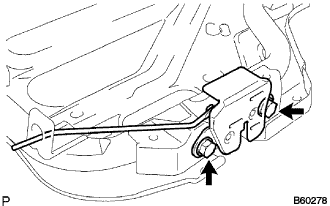

Rear seat ASSY (integrated) decomposition |
| 1. Remove the rear seat cushion cover & pad |
Remove the hogling and remove the rear seat cushion cover and pad.
| 2. Remove the rear seat cushion and remove |
Remove the rear seat cushion and cross.
| 3. Remove the rear seat headrest ASSY |
Remove two rear seat headrest ASSY from the rear seat Batsuku ASSY.
| 4. Remove the rear seat headrest ASSY CTR |
Remove the rear seat headrest ASSY CTR from the rear seat Batsuku ASSY.
| 5. Remove the rear seat back stop release button |
Turn in the counterclockwise direction and remove two rear seat bats top release buttons.
| 6. Remove the rear seat headrest support |
 |
Use the clip remover to remove the seven clips.
Turn over the rear seat Batsuku cover and remove the hogling.
 |
Remove the claws and remove the rear seat headrest support ASSY.
| 7. Remove the rear seat backstop button gromet |
Remove the claws and remove the rear seat Batsukustop butonromet.
| 8. Rena seat backpad SUB-ASSY (cover Tsuki) |
Remove the rear seat Batsuku cover & pad.
| 9. |
Remove the rear seat cross -round cross.
| 10. Remove the rear seat back lock ASSY RH |
|  |
Remove the two bolts and remove the rear seat cross clock RH.
| 11. Remove the rear seat back lock assy LH |
Remove the two bolts and remove the rear seat cross clock LH.
| 12. Remove the rear seat back hinge SUB-ASSY RH |
 |
Remove the bolt and remove the rear seat Batsuku hinge RH.
| 13. Rena seat back hinge SUB-ASSY LH is removed |
Remove the bolt and remove the rear seat Batsuku hinge LH.
| 14. Cheldrest Rain Seat Anka Bracket RH removed |
Take off the floor carpet.
 |
Remove the four bolts and remove the Child Rest Raint Seat Anka Bracket RH.